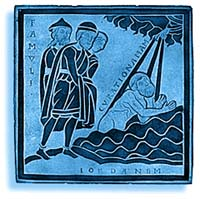
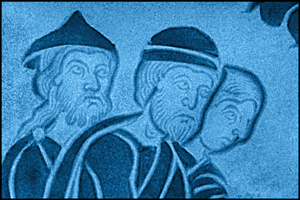

Engraving
X-radiographs like this can give a very clear picture of the engraving of the plaque. Surface scratches, flaws and reflections are not seen. Any "keying" of the underlying metal to hold the enamel in place would be shown.

Back